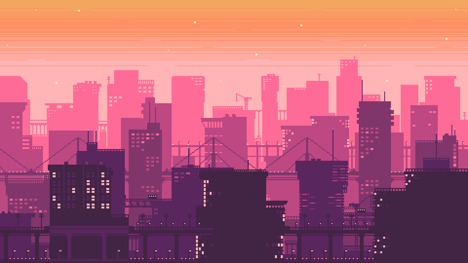

<div class="flex relative w-full min-h-screen">
    

    <!-- TODO: make greeting look like it is from a terminal -->
    <div class="absolute top-0 left-0 p-2 bg-gradient-to-r from-orange-400 from-80%">
        <span class="font-mono font-bold text-white text-2xl whitespace-pre-line">
            {{ greeting }}
        </span>
    </div>
</div>